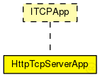

This documentation is released under the Creative Commons license
This documentation is released under the Creative Commons licenseEin HTTP-Server-Modul, das über einen kompletten Netzwerkstack mittels TCP mit einem HTTP-Client-Modul kommuniziert.
Das Modul ist als TCPApp ausgeführt und kann deshalb als Anwendung mit einem StandardHost-Modul verwendet werden
The following diagram shows usage relationships between types. Unresolved types are missing from the diagram.
The following diagram shows inheritance relationships for this type. Unresolved types are missing from the diagram.
| Name | Type | Default value | Description |
|---|---|---|---|
| localAddress | string | "" |
IP-Adresse, die beim Senden verwendet wird; hier: automatisch festgelegt |
| localPort | int | 80 |
Die eigene Portadresse. |
| numBytes | int | 4000 |
Länge des HTML-Dokuments |
| dataTransferMode | string | "bytestream" |
Es werden reale Daten übertragen. |
| Name | Direction | Size | Description |
|---|---|---|---|
| tcpIn | input | ||
| tcpOut | output |
// // Ein HTTP-Server-Modul, das über einen kompletten Netzwerkstack mittels TCP mit einem HTTP-Client-Modul kommuniziert. // // Das Modul ist als TCPApp ausgeführt und kann deshalb als Anwendung mit einem StandardHost-Modul verwendet werden // simple HttpTcpServerApp like ITCPApp { parameters: string localAddress = default(""); // IP-Adresse, die beim Senden verwendet wird; hier: automatisch festgelegt int localPort = default(80); // Die eigene Portadresse. int numBytes = default(4000); // Länge des HTML-Dokuments string dataTransferMode = default("bytestream"); // Es werden reale Daten übertragen. gates: input tcpIn; output tcpOut; }
This documentation is released under the Creative Commons license